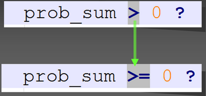

Mutation testing
Janvier 2017 - OuiCar
Fly Marcel & Guillaume Claret
Mutation testing
- méthode pour tester les tests
- on génère un commit aléatoire
- on regarde si les tests détectent un problème
- si non, un bug est peut-être passé inaperçu
Génération des commits
Avec un singe savant.
Chez nous : Fly Marcel
Exemples de commit
- suppression d'une ligne
- suppression d'un caractère
- changement de wording
-
changements vicieux :

On lance nos tests
- tests unitaires
- typage
- tests d'intégration, ...
Résultats
Si les tests sont invalides :
-
victoire, le bug a été détecté !

Résultats
Si les tests sont valides :
-
soit le commit n'était pas un bug (chance)

Résultats
Si les tests sont valides :
-
soit les tests sont incomplets

Piste pour mieux blinder ses tests !
Démo
Difficultés
- lent
- faux positifs
- peu d'outils disponibles
Alternative
Détection de couverture en pourcentage de lignes.
- plus rapide
- mais moins précis
Merci.
Blog technique :
ouicar.github.io